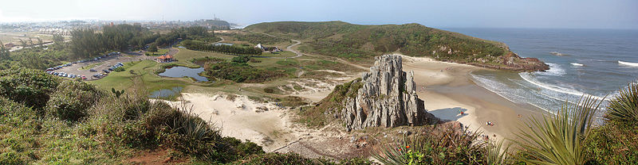
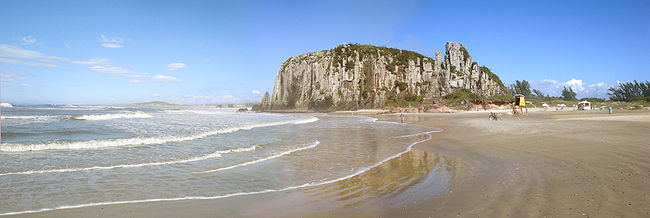
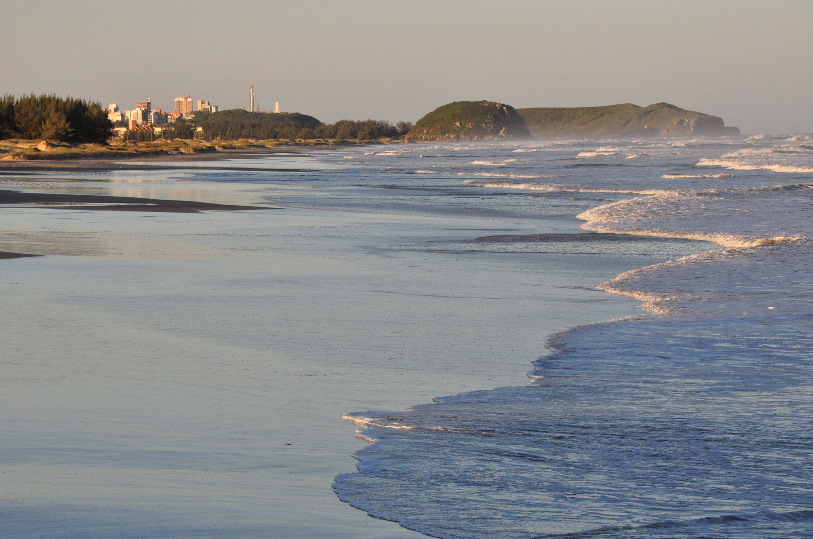
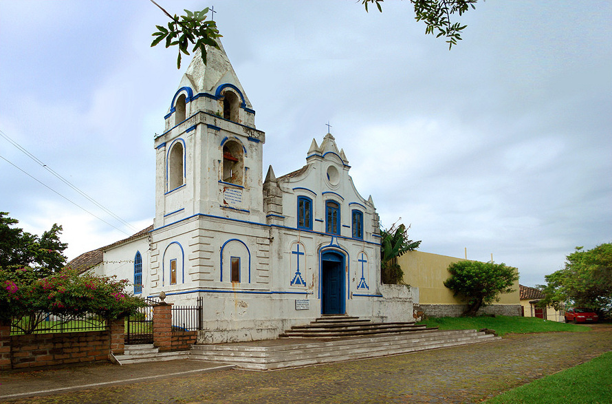

Parque da guarita
O Parque Estadual José Lutzenberger, mais conhecido como Parque da Guarita, é uma Unidade de Conservação brasileira situada na região sul, no Estado do Rio Grande do Sul, no município de Torres. Seu nome homenageia o ambientalista gaúcho José Lutzenberger, que foi um dos maiores incentivadores da sua criação.
O Parque da Guarita localiza-se em uma área que correspondia a um complexo turístico. É constituído essencialmente por ecossistema costeiro, contando com a praia da Guarita, porém na sua implantação foram criadas áreas reproduzindo outros ecossistemas da região.
Possui cerca de 350 hectares e sofre há 5 décadas com a falta de gerenciamento. Somente em janeiro de 2002 houve projeto privado em parceria com a municipalidade para revitalizá-lo e dar-lhe funções de educação ambiental e turísticas. Com o advento do furacão Catarina o projeto foi desativado e nos dias de hoje cogita-se terceirização do mesmo. Existem pesquisas sobre sua biota e um dos levantamentos mais completos foi realizado pela designer ambiental Cláudia Costa, estando em fase de acabamento para publicação.
Praia da Guarita
É um dos balneários que compõem os 23 quilômetros de orla marítima de Torres, município que faz divisa com Santa Catarina e que tem como vias de acesso a BR-101 (para quem vem do norte ou do sul) e a RS-389, esta última conhecida como Estrada do Mar (para quem vem do sul).
Comparando-se distâncias deste balneário com as capitais mais próximas e tomando-se como ponto de partida o centro de Torres, a distância é de 197 quilômetros de Porto Alegre e 280 quilômetros de Florianópolis.
A praia da Guarita se localiza entre falésias (as torres, que dão nome à cidade), tendo ao norte o Morro das Furnas e ao sul o Morro da Guarita, com um pináculo isolado ao centro. Integra a área de proteção ambiental do Parque da Guarita.
Praia Itapeva
É um dos balneários que compõem os 23 quilômetros de orla marítima de Torres, município que faz divisa com Santa Catarina e que tem como vias de acesso a BR-101 (para quem vem do norte ou do sul) e a RS-389, esta última conhecida como Estrada do Mar (para quem vem do sul).
Tem 6.000 metros de extensão e localiza-se após o Parque da itapeva. Tem esse nome devido ao Morro da Itapeva que em tupi guarani significa "pedra chata".
Inclui visita ao Camping Itapeva. Áreas de Mata Atlântica. Trilhas naturais pela vegetação nativa, dunas e lagoa. O morro se estende da lagoa até o mar.
Igreja São Domingos
A Igreja de São Domingos foi a primeira igreja a ser construída no trecho entre Laguna e Osório. Em 1815 o povoado possuía cerca de 400 almas, espalhadas em uma grande área de terra que se estendia do rio Mampituba a Arroio do Sal. O atendimento religioso desta população dependia da paróquia de Nossa Senhora da Conceição do Arroio (hoje Osório), a quase 100 km de distância.
O prédio e sua decoração interna têm um estilo eclético, com alguns traços neoclássicos e mesmo neogóticos, predominando porém elementos do barroco colonial tardio, muito simplificado. Suas linhas externas são um tanto rudes, mas têm certa graça. A fachada apresenta um pequeno adro com escadaria de poucos degraus, conduzindo à porta única central de arco abatido, ladeada de dois arcos cegos redondos emoldurando cruzes em relevo. No nível superior, três janelas também de arco abatido encimadas de um frontão de empenas curvas com um óculo redondo ao centro, pináculos prismáticos simples e uma cruzeta.